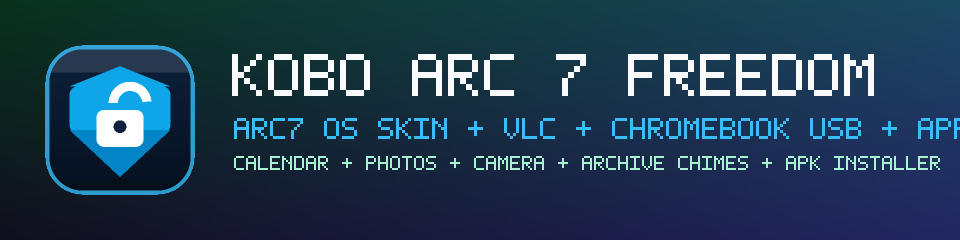

Customizable App Bar (v2.1.0)
Pin, reorder, or replace up to 12 apps on your Home dock or side rails. Choose from 5 positions (Bottom, Top, Left/Right side rail, Hidden) and 5 custom OS skins.
Kobo Arc 7 & 7HD · Android 4.2 · v2.1.0
Breathe new life into abandoned Kobo Arc 7 and 7HD tablets. An anti-brick verified root engine, customizable multi-edge App Bar launcher with 5 OS skins, two-way Chromebook USB internet, pre-bundled VLC media player, Aurora Store, F-Droid with TLS 1.3 bridge, and a native ARMv7 Linux toolchain.

python3 and apt toolchain in /system/xbin/Hardware & Software Upgrades
Replaces abandoned Kobo proprietary services with clean stock Android components, offline media tools, and modern protocol bridges.
Pin, reorder, or replace up to 12 apps on your Home dock or side rails. Choose from 5 positions (Bottom, Top, Left/Right side rail, Hidden) and 5 custom OS skins.
Two-way wired USB internet bridge: share Chromebook internet to Kobo over USB (with adb forward), or tether Kobo Wi-Fi to Chromebook as a plug-and-play Ethernet adapter.
Includes official ARMv7 VLC Media Player offline, Arc7 Calendar with home widget, Arc7 Notes with sketchpad, Arc7 Photos studio, and 20 Archive.org alarm chimes.
Installs static ARMv7 python3, pip, curl, and apt into /system/xbin/, enabling full local script development in Arc7 Terminal.
Installation & Setup
Factory unrooted Kobo tablets run stock Android 4.2.2 with expired 2013 SSL root certs, causing modern HTTPS websites to fail with SSL handshake errors. Kobo Arc 7 Freedom provides 3 working installation methods designed specifically for this:
Method 1: Local Wi-Fi Rooting Server (Recommended for unrooted tablets)
Download the companion script to your computer and run it:
Windows: Start-Kobo-WiFi-Server.bat
macOS/Linux: ./Start-Kobo-WiFi-Server.shhttp://<your-pc-ip>:8000 to download Upgrade-My-Kobo-To-v2.1.0.apk without SSL errors.
Method 2: USB / ADB Sideload
Enable USB Debugging under Settings > Developer Options on the tablet, connect via USB, and run:
adb install Upgrade-My-Kobo-To-v2.1.0.apkMethod 3: Direct Download & MicroSD Transfer
Download Upgrade-My-Kobo-To-v2.1.0.apk from GitHub Releases on your PC, then copy it to a MicroSD card or tablet internal storage over USB MTP.
1. Execute 1-Tap Root & Full Upgrade
Open Upgrade-My-Kobo-To-v2.1.0.apk on the tablet and tap 1-Tap Root & Full Upgrade. It applies anti-brick root, purges obsolete bloatware, installs 120 updated 2026 SSL root certificates, TLS 1.3 bridge, Aurora Store, F-Droid, VLC, and Customizable App Bar Launcher v51.
2. Customize the App Bar & OS Skins
Long-press any icon on the Home App Bar or tap App Bar to configure 0–12 app slots, move the dock (Bottom, Top, Left/Right side rail, or Hidden), and select from 5 custom skins (Obsidian Cyan, Midnight Emerald, Solaris Amber, Amethyst Dusk, E-Ink Frost).
3. Chromebook / Linux Wired USB Internet
./Start-Chromebook-Wired-Internet.sh4. Use Linux Terminal Utilities
python3 --version && apt --helpDevice Support
Tested and verified on real Kobo hardware with custom drivers and hardware acceleration.
MediaTek MT8125 Quad-Core ARM Cortex-A7 (apollojr). Full 60fps animations and audio drivers.
NVIDIA Tegra 3 Quad-Core ARM Cortex-A9. High-resolution 1920×1200 panel with smooth graphics.
Preserves all essential camera, Wi-Fi, Bluetooth, and battery management HAL drivers.